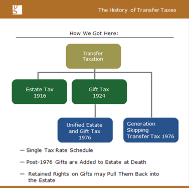

| 
To address these issues, in 1976 Congress implemented a Unified Estate and Gift Tax.
It was a unified system in that both the estate tax and the gift tax used the same tax rate schedule. Whether the transfer was made in life or at death, the same tax rates would be applied.
It was also unified in the sense that the estate tax and the gift tax would no longer be calculated independently. Instead, there would be consideration of lifetime gifts when computing estate taxes.
Here was the premise: the IRS would charge the same tax regardless of when the transfer occurred. To accomplish this, when you die, all post-1976 taxable gifts will be added back to your estate. The result is that you would compute your estate tax as if you had never given these amounts away.
A final thing the unified system did was address some of those transfers where people were retaining power over assets as if they still owned them outright. Essentially, the new rules said that if you made transfers in which you retained too much power, then they were considered incomplete transfers and the assets would be added back to your estate upon your death.
The final thing Congress did in 1976 was address the strategy to avoid the estate tax by skipping generations. Congress addressed this with a totally independent tax known as the “Generation Skipping Transfer Tax.” Essentially, this legislation said that sizeable transfers that skip a generation will be subject to an additional tax, assessed at the highest rate on the Unified Estate and Gift Tax Schedule.
Although there have been some reforms along the way, and we will talk about those, the 1976 legislation is essentially the tax system we have today. This course will flesh out more of the details as to how this system of taxation works.
|